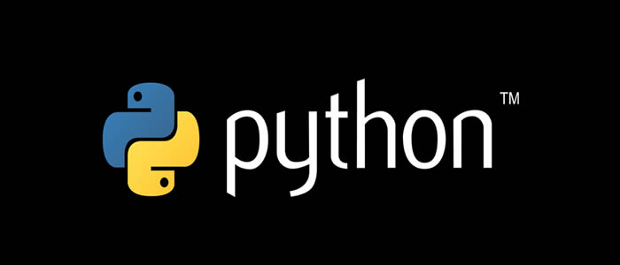
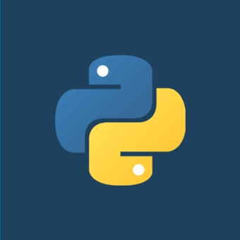
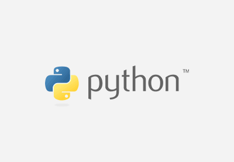
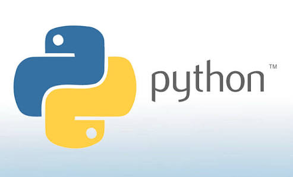

O Python foi concebido no final de 1989 por Guido van Rossum no Instituto de Pesquisa
Nacional para Matemática e Ciência da Computação (CWI), nos Países Baixos, como um sucessor
da ABC capaz de tratar exceções e prover interface com o sistema operacional Amoeba
através de scripts.
Também da CWI, a linguagem ABC era mais produtiva que C, ainda que com
o custo do desempenho em tempo de execução. Mas ela não possuía funcionalidades importantes
para a interação com o sistema operacional, uma necessidade do grupo. Um dos focos
primordiais de Python era aumentar a produtividade do programador.
Python foi feita com base na linguagem ABC, possui parte da sintaxe derivada do C,
compreensão de listas, funções anonimas e função map de Haskell. Os iteradores são baseados
na Icon, tratamentos de exceção e módulos da Modula-3, expressões regulares de Perl.

Em 1991, Guido publicou o código (nomeado versão 0.9.0) no grupo de discussão alt.sources.
Nessa versão já estavam presentes classes com herança, tratamento de exceções, funções
e os tipos de dado nativos list, dict, str, e assim por diante. Também estava presente
nessa versão um sistema de módulos emprestado do Modula-3.
O modelo de exceções também
lembrava muito o do Modula-3, com a adição da opção else clause.Em 1994 foi formado o
principal fórum de discussão do Python, comp.lang.python, um marco para o crescimento da
base de usuários da linguagem.
Versão 1.0
A versão 1.0 foi lançada em janeiro de 1994. Novas funcionalidades incluíam ferramentas
para programação funcional como lambda, map, filter e reduce.
A última versão enquanto
Guido estava na CWI foi o Python 1.2. Em 1995, ele continuou o trabalho no CNRI em Reston,
Estados Unidos, de onde lançou diversas versões. Na versão 1.4 a linguagem ganhou
parâmetros nomeados (a capacidade de passar parâmetro pelo nome e não pela posição na lista
de parâmetros) e suporte nativo a números complexos, assim como uma forma de
encapsulamento.
Ainda na CNRI, Guido lançou a iniciativa Computer Programming for Everybody (CP4E;
literalmente, "Programação de Computadores para Todos"), que visava tornar a programação
mais acessível, um projeto financiado pela DARPA. Atualmente o CP4E encontra-se inativo.
Em 2000, o time de desenvolvimento da linguagem se mudou para a BeOpen a fim de formar o
time PythonLabs.
A CNRI pediu que a versão 1.6 fosse lançada, para marcar o fim de
desenvolvimento da linguagem naquele local. O único lançamento na BeOpen foi o Python 2.0,
e após o lançamento o grupo de desenvolvedores da PythonLabs agrupou-se na Digital
Creations.
Versão 1.6

Já o 1.6 incluiu uma licença CNRI substancialmente mais longa que a licença CWI que estavam
usando nas versões anteriores. Entre outras mudanças, essa licença incluía uma cláusula
atestando que a licença era governada pelas leis da Virgínia. A Free Software Foundation
alegou que isso era incompatível com a GNU GPL. Tanto BeOpen quanto CNRI e FSF negociaram
uma mudança na licença livre do Python que o tornaria compatível com a GPL. Python 1.6.1 é
idêntico ao 1.6.0, exceto por pequenas correções de falhas e uma licença nova, compatível
com a GPL.
Versão 2.0

Implementou list comprehension, uma relevante funcionalidade de linguagens
funcionais como SETL e Haskell. A sintaxe da linguagem para essa construção é bastante
similar a de Haskell, exceto pela preferência do Haskell por caracteres de pontuação e da
preferência do python por palavras reservadas alfabéticas.
Essa versão 2.0 também
introduziu um sistema coletor de lixo capaz de identificar e tratar ciclos de referências.
Versão 2.1

Python 2.1 era parecido com as versões 1.6.1 e 2.0.
Sua licença foi renomeada para Python
Software Foundation License. Todo código, documentação e especificação desde o lançamento
da versão alfa da 2.1 é propriedade da Python Software Foundation (PSF), uma organização
sem fins lucrativos fundada em 2001, um modelo tal qual da Apache Software Foundation.
O lançamento incluiu a mudança na especificação para suportar escopo aninhado, assim como
outras linguagens com escopo estático. Esta funcionalidade estava desativada por
padrão, e somente foi requerida na versão 2.2.
Versão 3.0
A terceira versão da linguagem foi lançada em dezembro de 2008, chamada Python 3.0 ou
Python 3000. Com noticiado desde antes de seu lançamento, houve quebra de
compatibilidade com a família 2.x para corrigir falhas que foram descobertas neste padrão,
e para limpar os excessos das versões anteriores.A primeira versão alfa foi lançada em
31 de agosto de 2007, a segunda em 7 de dezembro do mesmo ano.